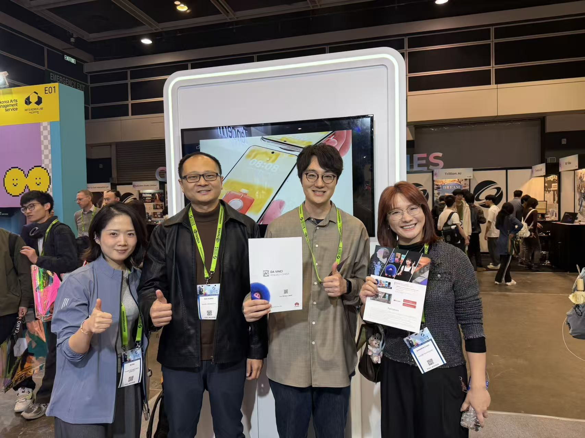
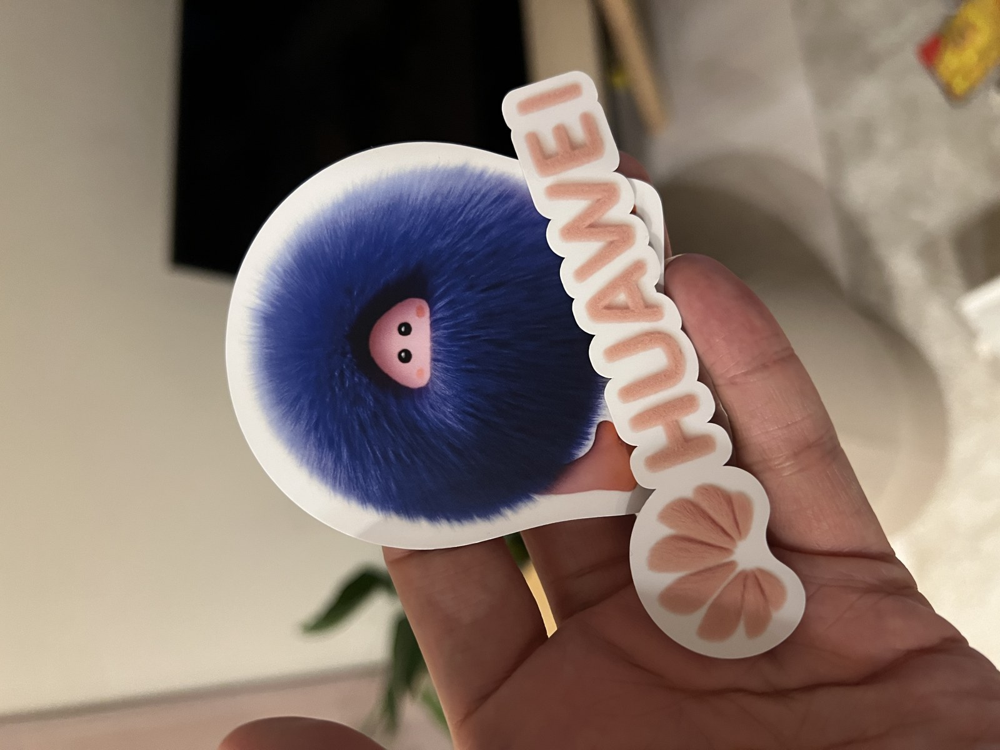

HanHan (“憨憨”) is the “舞林萌主” (Dance-floor Star) — an AI interactive theme character shipped on the HUAWEI Pura 80 Ultra. The fluffy mascot lives on the phone and reacts playfully to your touch: blow on it, tickle it, and it springs to life.
For this project, we contributed the interactive fur rendering technology that runs in real time on the mobile device — bringing HanHan’s soft, dynamic fur to life directly on the phone.
舞林萌主驾到。AI 互动主题，舞林萌主“憨憨”，一出道就是新晋团宠。对着它吹吹气，挠挠痒，互动起来超好玩。
Interactions
Contribution
Interactive fur rendering technology, optimized to run in real time on-device for the AI interactive theme. The technology renders HanHan’s fur with responsive, physically-plausible motion as the user interacts with the character.
Gallery


On X
Source
Featured on the official product page [ HUAWEI Pura 80 Ultra ]. Videos and imagery © HUAWEI, shown here for portfolio reference.
← Back to Portfolio